SubsetInverseSampling¶
-
class
otsubsetinverse.SubsetInverseSampling(*args)¶ Subset inverse simulation.
- Parameters
- event
Event Event we are computing the probability of. The threshold of the event is not used.
- targetProbabilityfloat
The wanted final probability.
- proposalRangefloat, optional
Proposal range length
- conditionalProbabilityfloat, optional
Value of
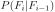
between successive steps
- event
See also
openturns.Simulation
Notes
The goal is to estimate the threshold of the following target probability :
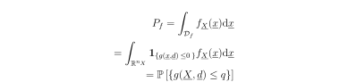
The idea of the subset simulation method is to replace simulating a rare failure event in the original probability space by a sequence of simulations of more frequent conditional events
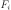
: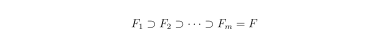
The original probability estimate rewrites :
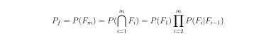
And each conditional subset failure region is chosen by setting the threshold
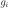
so that leads to a conditional failure probability of order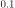
: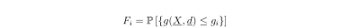
The conditional samples are generated by the means of Markov Chains, using the Metropolis Hastings algorithm.
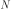
being the number of simulations per subset, and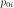
the conditional probability of each subset event, and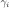
the autocorrelation between Markov chain samples.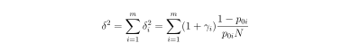
The first event
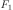
not being conditional,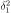
expresses as the classic Monte Carlo c.o.v.Examples
>>> import openturns as ot >>> import otsubsetinverse as otsi
>>> ot.RandomGenerator.SetSeed(0)
Create a performance function with an associated distribution.
>>> limitState = ot.SymbolicFunction(['u1', 'u2'], ['u1-u2']) >>> dim = limitState.getInputDimension() >>> mean = ot.Point([7., 2.]) >>> sigma = ot.Point(dim, 1.0) >>> R = ot.IdentityMatrix(dim) >>> myDistribution = ot.Normal(mean, sigma, R) >>> vect = ot.RandomVector(myDistribution) >>> output = ot.RandomVector(limitState, vect)
Create an event with a fictional threshold value which will not be used.
>>> myEvent = ot.Event(output, ot.Less(), 0.)
Define the target probability for which the threshold will be computed.
>>> targetProbability = 0.0002 >>> mySS = otsi.SubsetInverseSampling(myEvent, targetProbability) >>> mySS.setMaximumOuterSampling(10000) >>> mySS.run()
Get some results.
>>> ResultSS = mySS.getResult() >>> print('Pf = {}'.format(ResultSS.getProbabilityEstimate())) Pf = 0.0002 >>> print('Threshold = {}'.format(mySS.getThresholdPerStep()[-1])) Threshold = 0.0202715501987 >>> print('Threshold confidence length = {}'.format( ... mySS.getThresholdConfidenceLength(0.90))) Threshold confidence length = 0.0244117131807
Methods
drawProbabilityConvergence(*args)Draw the probability convergence at a given level.
Accessor to the block size.
Accessor to the object’s name.
Coefficient of variation per step accessor.
Conditional probability accessor.
Accessor to the convergence strategy.
getEvent()Accessor to the event.
Input sample accessor.
Output sample accessor.
Autocorrelation accessor.
getId()Accessor to the object’s id.
All input sample accessor.
Accessor to the maximum coefficient of variation.
Accessor to the maximum sample size.
Accessor to the maximum standard deviation.
getName()Accessor to the object’s name.
Subset steps number accesor.
All output sample accessor.
Probability estimate accessor.
Proposal range length accessor.
Accessor to the results.
Accessor to the object’s shadowed id.
Final target probability accessor.
Threshold coefficient of variation per step accessor.
getThresholdConfidenceLength(*args)Accessor to the confidence length of the threshold.
Threshold accessor.
Accessor to verbosity.
Accessor to the object’s visibility state.
hasName()Test if the object is named.
Test if the object has a distinguishable name.
run()Launch simulation.
setBetaMin(betaMin)Radius of the hypershere accessor.
setBlockSize(blockSize)Accessor to the block size.
setConditionalProbability(conditionalProbability)Conditional probability accessor.
setConvergenceStrategy(convergenceStrategy)Accessor to the convergence strategy.
setISubset(iSubset)Conditonal simulation activation accessor.
setKeepEventSample(keepEventSample)Sample storage accessor.
Accessor to the maximum coefficient of variation.
setMaximumOuterSampling(maximumOuterSampling)Accessor to the maximum sample size.
Accessor to the maximum standard deviation.
setName(name)Accessor to the object’s name.
setProgressCallback(*args)Set up a progress callback.
setProposalRange(proposalRange)Proposal range length accessor.
setShadowedId(id)Accessor to the object’s shadowed id.
setStopCallback(*args)Set up a stop callback.
setTargetProbability(targetProbability)Final target probability accessor.
setVerbose(verbose)Accessor to verbosity.
setVisibility(visible)Accessor to the object’s visibility state.
-
__init__(*args)¶ Initialize self. See help(type(self)) for accurate signature.
-
drawProbabilityConvergence(*args)¶ Draw the probability convergence at a given level.
- Parameters
- levelfloat, optional
The probability convergence is drawn at this given confidence length level. By default level is 0.95.
- Returns
- grapha
Graph probability convergence graph
- grapha
-
getBlockSize()¶ Accessor to the block size.
- Returns
- blockSizeint
Number of terms in the probability simulation estimator grouped together. It is set by default to 1.
-
getClassName()¶ Accessor to the object’s name.
- Returns
- class_namestr
The object class name (object.__class__.__name__).
-
getCoefficientOfVariationPerStep()¶ Coefficient of variation per step accessor.
- Returns
- coef
openturns.Point Coefficient of variation at each subset step.
- coef
-
getConditionalProbability()¶ Conditional probability accessor.
Value of between successive steps.
- Returns
- probfloat
Conditional probability value.
-
getConvergenceStrategy()¶ Accessor to the convergence strategy.
- Returns
- storage_strategy
HistoryStrategy Storage strategy used to store the values of the probability estimator and its variance during the simulation algorithm.
- storage_strategy
-
getEvent()¶ Accessor to the event.
- Returns
- event
RandomVector Event we want to evaluate the probability.
- event
-
getEventInputSample()¶ Input sample accessor.
- Returns
- inputSample
openturns.Sample Input sample.
- inputSample
-
getEventOutputSample()¶ Output sample accessor.
- Returns
- outputSample
openturns.Sample Ouput sample.
- outputSample
-
getGammaPerStep()¶ Autocorrelation accessor.
- Returns
- prob
openturns.Point Autocorrelation values.
- prob
-
getId()¶ Accessor to the object’s id.
- Returns
- idint
Internal unique identifier.
-
getInputSample()¶ All input sample accessor.
- Returns
- inputSample
openturns.Sample Input sample.
- inputSample
-
getMaximumCoefficientOfVariation()¶ Accessor to the maximum coefficient of variation.
- Returns
- coefficientfloat
Maximum coefficient of variation of the simulated sample.
-
getMaximumOuterSampling()¶ Accessor to the maximum sample size.
- Returns
- outerSamplingint
Maximum number of groups of terms in the probability simulation estimator.
-
getMaximumStandardDeviation()¶ Accessor to the maximum standard deviation.
- Returns
- sigmafloat,
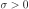
Maximum standard deviation of the estimator.
- sigmafloat,
-
getName()¶ Accessor to the object’s name.
- Returns
- namestr
The name of the object.
-
getNumberOfSteps()¶ Subset steps number accesor.
- Returns
- nint
Number of subset steps.
-
getOutputSample()¶ All output sample accessor.
- Returns
- outputSample
openturns.Sample Output sample.
- outputSample
-
getProbabilityEstimatePerStep()¶ Probability estimate accessor.
- Returns
- prob
openturns.Point Probability estimate values.
- prob
-
getProposalRange()¶ Proposal range length accessor.
- Returns
- rangefloat
Range length.
-
getResult()¶ Accessor to the results.
- Returns
- results
SimulationResult Structure containing all the results obtained after simulation and created by the method
run().
- results
-
getShadowedId()¶ Accessor to the object’s shadowed id.
- Returns
- idint
Internal unique identifier.
-
getTargetProbability()¶ Final target probability accessor.
Value of .
- Returns
- probfloat
Final target probability value.
-
getThresholdCoefficientOfVariationPerStep()¶ Threshold coefficient of variation per step accessor.
- Returns
- coef
openturns.Point Coefficient of variation at each subset step.
- coef
-
getThresholdConfidenceLength(*args)¶ Accessor to the confidence length of the threshold.
- Parameters
- levelfloat,
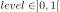
Confidence level. By default, it is
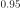
.
- levelfloat,
- Returns
- confidenceLengthfloat
Length of the confidence interval at the confidence level level.
-
getThresholdPerStep()¶ Threshold accessor.
- Returns
- threshold
openturns.Point Threshold values.
- threshold
-
getVerbose()¶ Accessor to verbosity.
- Returns
- verbosity_enabledbool
If True, the computation is verbose. By default it is verbose.
-
getVisibility()¶ Accessor to the object’s visibility state.
- Returns
- visiblebool
Visibility flag.
-
hasName()¶ Test if the object is named.
- Returns
- hasNamebool
True if the name is not empty.
-
hasVisibleName()¶ Test if the object has a distinguishable name.
- Returns
- hasVisibleNamebool
True if the name is not empty and not the default one.
-
run()¶ Launch simulation.
See also
setBlockSize,setMaximumOuterSampling,ResourceMap,SimulationResult
Notes
It launches the simulation and creates a
SimulationResult, structure containing all the results obtained after simulation. It computes the probability of occurence of the given event by computing the empirical mean of a sample of size at most outerSampling * blockSize, this sample being built by blocks of size blockSize. It allows to use efficiently the distribution of the computation as well as it allows to deal with a sample size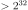
by a combination of blockSize and outerSampling.
-
setBetaMin(betaMin)¶ Radius of the hypershere accessor.
- Parameters
- betafloat
Radius value of the exclusion hypershere when the conditional simulation is activated.
-
setBlockSize(blockSize)¶ Accessor to the block size.
- Parameters
- blockSizeint,
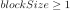
Number of terms in the probability simulation estimator grouped together. It is set by default to 1.
- blockSizeint,
Notes
For Monte Carlo, LHS and Importance Sampling methods, this allows to save space while allowing multithreading, when available we recommend to use the number of available CPUs; for the Directional Sampling, we recommend to set it to 1.
-
setConditionalProbability(conditionalProbability)¶ Conditional probability accessor.
Value of between successive steps.
- Parameters
- probfloat
Conditional probability value.
-
setConvergenceStrategy(convergenceStrategy)¶ Accessor to the convergence strategy.
- Parameters
- storage_strategy
HistoryStrategy Storage strategy used to store the values of the probability estimator and its variance during the simulation algorithm.
- storage_strategy
-
setISubset(iSubset)¶ Conditonal simulation activation accessor.
- Parameters
- isubsetbool
Activate or not the conditional simulation for the first step of the simulation.
-
setKeepEventSample(keepEventSample)¶ Sample storage accessor.
- Parameters
- probbool
Whether to keep the event samples.
-
setMaximumCoefficientOfVariation(maximumCoefficientOfVariation)¶ Accessor to the maximum coefficient of variation.
- Parameters
- coefficientfloat
Maximum coefficient of variation of the simulated sample.
-
setMaximumOuterSampling(maximumOuterSampling)¶ Accessor to the maximum sample size.
- Parameters
- outerSamplingint
Maximum number of groups of terms in the probability simulation estimator.
-
setMaximumStandardDeviation(maximumStandardDeviation)¶ Accessor to the maximum standard deviation.
- Parameters
- sigmafloat,
Maximum standard deviation of the estimator.
-
setName(name)¶ Accessor to the object’s name.
- Parameters
- namestr
The name of the object.
-
setProgressCallback(*args)¶ Set up a progress callback.
Can be used to programmatically report the progress of a simulation.
- Parameters
- callbackcallable
Takes a float as argument as percentage of progress.
Examples
>>> import sys >>> import openturns as ot >>> experiment = ot.MonteCarloExperiment() >>> X = ot.RandomVector(ot.Normal()) >>> Y = ot.CompositeRandomVector(ot.SymbolicFunction(['X'], ['1.1*X']), X) >>> event = ot.ThresholdEvent(Y, ot.Less(), -2.0) >>> algo = ot.ProbabilitySimulationAlgorithm(event, experiment) >>> algo.setMaximumOuterSampling(100) >>> algo.setMaximumCoefficientOfVariation(-1.0) >>> def report_progress(progress): ... sys.stderr.write('-- progress=' + str(progress) + '%\n') >>> algo.setProgressCallback(report_progress) >>> algo.run()
-
setProposalRange(proposalRange)¶ Proposal range length accessor.
- Parameters
- rangefloat
Range length.
-
setShadowedId(id)¶ Accessor to the object’s shadowed id.
- Parameters
- idint
Internal unique identifier.
-
setStopCallback(*args)¶ Set up a stop callback.
Can be used to programmatically stop a simulation.
- Parameters
- callbackcallable
Returns an int deciding whether to stop or continue.
Examples
Stop a Monte Carlo simulation algorithm using a time limit
>>> import openturns as ot >>> experiment = ot.MonteCarloExperiment() >>> X = ot.RandomVector(ot.Normal()) >>> Y = ot.CompositeRandomVector(ot.SymbolicFunction(['X'], ['1.1*X']), X) >>> event = ot.ThresholdEvent(Y, ot.Less(), -2.0) >>> algo = ot.ProbabilitySimulationAlgorithm(event, experiment) >>> algo.setMaximumOuterSampling(10000000) >>> algo.setMaximumCoefficientOfVariation(-1.0) >>> timer = ot.TimerCallback(0.1) >>> algo.setStopCallback(timer) >>> algo.run()
-
setTargetProbability(targetProbability)¶ Final target probability accessor.
Value of .
- Parameters
- probfloat
Final target probability value.
-
setVerbose(verbose)¶ Accessor to verbosity.
- Parameters
- verbosity_enabledbool
If True, make the computation verbose. By default it is verbose.
-
setVisibility(visible)¶ Accessor to the object’s visibility state.
- Parameters
- visiblebool
Visibility flag.